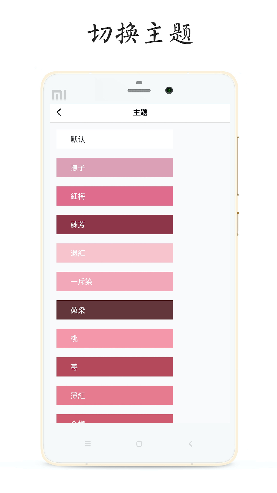
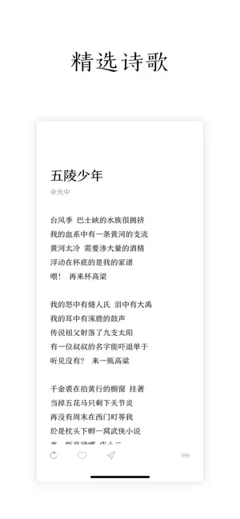

POEM 对比评测：极简诗歌应用的克制哲学
在古诗词应用百花齐放、社区玩法层出不穷的诗歌类目中，POEM 走了一条完全相反的路——它选择做减法。
诗歌应用的两条路
诗歌类应用大致分两种。一种以传统的大型诗词文库为代表，讲究内容的厚度和功能的密度——注释、赏析、飞花令、诗词接龙，把读诗这件事变成了一件热闹的事。另一种是近年来冒出来的极简派，主打一屏一首、干净排版，让你关掉所有干扰直接读。
POEM 是后者里最值得单独拿出来说的一款。它的开发者北京西窗文化传媒有限公司，正是做了西窗烛的那批人。一个团队同时做两款方向几乎相反的诗歌应用，这件事本身就很有意思——西窗烛管古典、管厚，POEM 管现代、管薄。感兴趣可以去官网看看这款应用的完整介绍。
差异化：三个其他应用很少做到的事
零解释的阅读体验
打开 POEM 的读诗页，你会发现页面上只有诗名、作者、正文。没有注释框、没有赏析区、没有评论入口。甚至连底部的工具栏默认都是收起来的，上下滑动就是切换下一首。
这不是功能没做完，是故意砍掉的。开发者在介绍里写得很直白：读古诗需要注释和背景，读现代诗需要的是不加解释地读三遍。你读海子的《日记》、读顾城的《远和近》，真的需要有人逐句给你解读"姐姐，今夜我在德令哈"是什么意思吗？
这种"零解释"的立场，把 POEM 和其他所有诗歌应用拉开了距离。同类工具要么在旁边挂着译文和注释，要么把社区评论嵌在诗页底部——POEM 选择完全信任文字本身。
251 款传统色主题
这是 POEM 最有辨识度的一个细节。应用内置了 251 款来自中国传统色名录的主题色——赤、朱砂、藤黄、青黛……每一个颜色都有出处，点开还能看到它在古籍里的记载。
诗歌类应用做主题换肤不是新鲜事，但把一整套中国传统色做进来，而且每个颜色都有名字和故事，这在同类里几乎是独一份。配合极简排版，选一个自己喜欢的颜色，整首诗的氛围感立刻就不一样了。

西窗家族的内容积累
虽然产品走的是极简路线，但 POEM 背后不是从零开始的内容。西窗烛多年积累的诗词库、古籍资源、对诗歌分类体系的理解，都在底层支撑着 POEM 的选诗逻辑。五部经典诗集、诗人分类、诗作归档，这些框架不是凭空搭起来的。
换句话说，POEM 的"薄"是刻意为之的薄——内容底子厚，只是前台只露出了最干净的那一面。下载安装包也很方便，应用本身不大，安装完就能直接进入那个安静的诗歌世界。
取舍：为极简付出的代价
极简不是没有代价的，POEM 在几个地方做了相当明确的取舍。
最明显的是搜索能力。POEM 的搜索目前主要围绕诗名和作者名两个维度，按诗句内容全文检索的功能一直没有补上。忘了诗名忘了作者、只记得某一句诗的场景，在 POEM 里反而不太好解决——你要么去搜这句诗，要么靠诗集和诗人分类慢慢翻。这个限制在 POEM 的文档里也有提到，给出的替代办法是遇到喜欢的诗立刻收藏，把收藏夹变成你的私人索引。至于为什么不做内容级搜索，可能是诗歌全文索引的技术难度（同一首外文诗常有多个译本，断行标点也不统一），也可能是开发者认为"内容检索"这件事本身就和极简理念不太搭。

第二个取舍是没有社区。POEM 不支持评论、不支持点赞、没有用户广场。这对于喜欢和人讨论诗、喜欢看别人读后感的用户来说是个缺点。但反过来看，这恰恰保证了读诗时的安静——不会有人在你读海子的时候刷一堆"看不懂+1"或"泪目"。
第三个是平台定位。POEM 主打现代诗，但现代诗的受众和古诗词比起来本来就窄。如果你的主要阅读需求在唐诗宋词那边，西窗烛显然是更好的选择，POEM 反而显得内容单薄。
选购结论
什么样的人选 POEM：
- 你想要一个纯粹的读诗工具，不想被注释、赏析、评论打扰
- 你读的主要是现代诗，或者想接触现代诗
- 你在意界面审美，希望每个细节都舒服
- 你已经有一套自己的诗歌知识框架，不需要别人教你怎么读
什么样的人选别的：
- 你想学古诗、需要注释和赏析辅助理解
- 你喜欢和人讨论诗、看别人的解读
- 你搜索能力要求高，经常需要按诗句内容反查出处
最后给一句明确的推荐：如果你是"想安静读诗"那一派，POEM 可能是目前最好的选择。它不完美，但它在自己选择的那条路上走得很稳——不回头。顺手提一句，这套资料的开源版本在GitHub、Gitee、GitCode 三处都能找到，国内访问选后两者更顺畅。